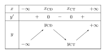
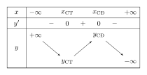
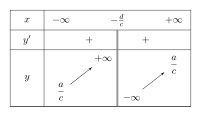
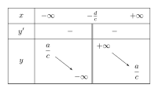
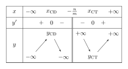
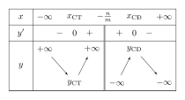
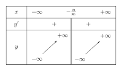
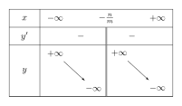

1 Khảo sát và lập bảng biến thiên của hàm số
Để khảo sát và vẽ đồ thị hàm số $y=f(x)$ thì ta thực hiện theo các bước sau đây:
- Tìm đạo hàm $f'(x)$ rồi xét dấu đạo hàm, xác định các khoảng đơn điệu, cực trị (nếu có) của hàm số.
- Tìm giới hạn tại vô cực và giới hạn vô cực của hàm số cũng như là các đường tiệm cận của đồ thị hàm số (nếu có).
- Lập bảng biến thiên của hàm số.
- Xác định các điểm cực trị (nếu có), giao điểm của đồ thị với các trục tọa độ (nếu có và dễ tìm)...
- Vẽ các đường tiệm cận của đồ thị hàm số (nếu có).
- Vẽ đồ thị hàm số.
2 Khảo sát hàm số bậc ba $y=ax^3+bx^2+cx+d \, (a \neq 0)$
| Trường hợp | $a > 0$ | $a < 0$ |
|---|---|---|
| Đồ thị hàm số | ||
|
Phương trình $y'=0$ có $2$ nghiệm phân biệt $\Delta_{y'} > 0 \Leftrightarrow b^2 - 3ac > 0$ |
0, 2 nghiệm" class="max-h-full w-auto object-contain">
|
|
|
Phương trình $y'=0$ có nghiệm kép $\Delta_{y'} = 0 \Leftrightarrow b^2 - 3ac = 0$ |
0, nghiệm kép" class="max-h-full w-auto object-contain">
|
|
|
Phương trình $y'=0$ vô nghiệm $\Delta_{y'} < 0 \Leftrightarrow b^2 - 3ac < 0$ |
0, vô nghiệm" class="max-h-full w-auto object-contain">
|
|
| Bảng biến thiên | ||
| $y'=0$ có $2$ nghiệm phân biệt |
 0, 2 nghiệm" class="max-h-full w-auto object-contain"> |
 |
| $y'=0$ có nghiệm kép |
0, nghiệm kép" class="max-h-full w-auto object-contain">
|
|
| $y'=0$ vô nghiệm |
0, vô nghiệm" class="max-h-full w-auto object-contain">
|
|
Chú ý:
Ta có $y'=3ax^2+2bx+c$ và $y''=6ax+2b$.
Khi đó: $y''=6ax+2b=0 \Leftrightarrow x=-\dfrac{b}{3a}$.
Đồ thị của hàm số bậc ba luôn nhận điểm $I(x_0;y_0)$ làm tâm đối xứng, trong đó $x_0=-\dfrac{b}{3a}$ là nghiệm của phương trình $y''=0$ và $y_0=y(x_0)$. Điểm $I(x_0;y_0)$ được gọi là điểm uốn của đồ thị này, nó cũng là trung điểm của đoạn thẳng nối $2$ điểm cực trị (nếu có).
3 Khảo sát hàm phân thức hữu tỉ $y=\dfrac{ax+b}{cx+d} \, (c \neq 0; ad-bc \neq 0)$
| Đặc điểm | $ad-bc > 0$ | $ad-bc < 0$ |
|---|---|---|
| Đồ thị hàm số |
0" class="max-h-full w-auto object-contain">
|
|
| Bảng biến thiên |
 0" class="max-h-full w-auto object-contain"> |
 |
Chú ý:
Đồ thị của hàm số $y=\dfrac{ax+b}{cx+d} \, \left(c \neq 0, ad-bc \neq 0\right)$:
- Có tiệm cận đứng là đường thẳng $x=-\dfrac{d}{c}$, tiệm cận ngang là đường thẳng $y=\dfrac{a}{c}$.
- Nhận giao điểm của $2$ đường tiệm cận $I\left(-\dfrac{d}{c};\dfrac{a}{c}\right)$ làm tâm đối xứng.
- Nhận $2$ đường phân giác của các góc tạo bởi tiệm cận đứng và tiệm cận ngang làm trục đối xứng.
4 Khảo sát hàm phân thức bậc hai trên bậc nhất $y=\frac{ax^2+bx+c}{mx+n} \, (a \neq 0; m \neq 0)$
Tập xác định: $D=\mathbb{R} \setminus \left\{-\dfrac{n}{m}\right\}$.
Đạo hàm: $y'=\dfrac{am \cdot x^2+2an \cdot x+bn-mc}{(mx+n)^2}$.
Đặt $g(x)=am \cdot x^2+2an \cdot x+bn-mc$.
Dấu của $y'$ là dấu của $g(x)=am \cdot x^2+2an \cdot x+bn-mc$.
| Trường hợp | $am > 0$ | $am < 0$ |
|---|---|---|
| Đồ thị hàm số | ||
|
Phương trình $y'=0$ có $2$ nghiệm phân biệt $\Delta_{g(x)} > 0$ |
0, 2 nghiệm" class="max-h-full w-auto object-contain">
|
|
|
Phương trình $y'=0$ có nghiệm kép hoặc vô nghiệm $\Delta_{g(x)} \le 0$ |
0, vô nghiệm/nghiệm kép" class="max-h-full w-auto object-contain">
|
|
| Bảng biến thiên | ||
| Hàm số có $2$ cực trị |
 0, 2 cực trị" class="max-h-full w-auto object-contain"> |
 |
| Hàm số không có cực trị |
 0, không có cực trị" class="max-h-full w-auto object-contain"> |
 |
Chú ý:
Đồ thị hàm số $y=\dfrac{ax^2+bx+c}{mx+n} \, (a \neq 0, m \neq 0$, đa thức tử không chia hết cho đa thức mẫu):
- Có tiệm cận đứng là đường thẳng $x=-\dfrac{n}{m}$, tiệm cận xiên là đường thẳng $y=\dfrac{a}{m}x-\dfrac{an-bm}{m^2}$
- Nhận giao điểm của tiệm cận đứng là tiệm cận xiên làm tâm đối xứng, tâm đối xứng này cũng là trung điểm của đoạn thẳng nối $2$ điểm cực trị (nếu có).
- Nhận hai đường phân giác của các góc tạo bởi tiệm cận đứng và tiệm cận xiên làm trục đối xứng.